2003年9月25日 再探巴黎
奧塞美術館，琳瑯滿目印象深；
街頭音樂家，演奏民謠賣ＣＤ。
蒙馬特街頭，繪畫高手聚一堂；
二遊塞納河，夜半驚魂搭錯車。
奧塞美術館的心靈饗宴
| 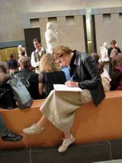 |
| 奧塞館內美麗的女學生聚精會神的聽講做筆記。 |
| 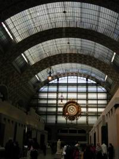 |
| 奧塞美術館的中庭 |
來法國之前，很多前輩告訴我們，到巴黎如果時間不夠，可選擇只到奧塞美術館，那裡收藏了很多印象派畫家的作品，我們抱著朝聖的心理，打算今天第一站先到此拜會。
今早時間還很充裕，我們由旅館走路至Ivry sur-Seine地鐵站，直接搭RER到奧塞美術館，這間座落在塞納河畔的美術館，以前原是舊奧塞車站，如今將其改建成為藝術的殿堂，收集十九世紀末期與二十世紀初期的作品。
在走往美術館的途中，遠遠看到一個大郵筒般圓柱小屋，就矗立在街道中，走近一看原來是間書攤，一大早店家正忙著把裡面的書刊移出來，車上一大堆的書報雜誌，路人經過，就會停下腳步，翻閱一下，隨意享受這豐盛的文化早餐。
到了奧塞美術館前，看到大排長龍的參觀者等著進場，沒想到還沒十點，已有這麼多人等待進入，在隊伍旁有小販穿梭兜售法國景點照片或畫作卡片等藝品，也有小販蹲坐角落，旁邊放著一台小音響，一對可愛的玩偶就隨著音樂的節拍扭動跳舞，真有趣，在排隊時還有這餘性節目可看就不會感到無聊，但他們可要隨時注意警察的取締。
隨著隊伍緩緩前進，來到門口，才知這排隊伍並不是為了買票，而是做安全檢查，等到要驗票時，我們亮了一下在台灣就申請的「教師証」，很快的就通關過去，看來教師的身份在這個國家還是蠻被尊重的。所以到巴黎之前至少要先拜託旅行社做好二件事，辦理教師正和買三日旅遊卷。（只是有時候，驗票員看到那麼多老師進場，也會有點懷疑的笑笑說：「All teachers？」）
底層兩側展覽場，放有米勒、盧梭、柯羅等作品，還有馬奈、莫內、雷諾亞早期的畫作，中間通道則是卡爾波、巴里、杜米埃的雕塑。在第一區安格爾畫的一張穿著黑絲絨的畫像，背景暗黑加上黑絲絨材質的衣服，只留下白裡透紅的臉龐，強烈對比的色彩與那細膩筆觸，將那雍容華貴的氣質表露無遺，讓我留下深刻印象。
在館內有老師帶著學生到現場做解說，學生們認真聽講，人手一本簿子，猛做筆記，有時老師也會讓學生發表自己的意見，真羨慕法國的學生，有這麼好的學習藝術環境。
順著樓梯而上，還有中層與上層的展覽場，到了上層看至一處人潮較多，原來那裡展示的是莫內馳名的印象派畫作「藍睡蓮」，這是莫內晚年作品，那畫得似像又不像的巨作，站在遠處觀賞，似乎可感受到花園裡寧謐的氣氛。
一些常在畫冊上看見的名畫，如今出現在眼前，這些畫家很多是終其一生為藝術而努力，如今能站在畫作前感受到他們當時作畫的那份情境與執著，內心充滿了佩服。如果沒有這批印象派畫家的堅持，我們至今看到的可能還都是千篇一律的的古典沙龍畫作。
經過昨天的教訓，今天同行的伙伴銳減了，可說是「有志一同」，人少就比較好溝通，原定下午到附近的羅浮宮參觀，但想到光看一個奧塞美術館，就有點眼花撩亂，所以臨時改變下午行程，前往蒙馬特逛逛。
街頭的曼妙樂曲
| 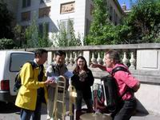 |
| 一位街頭藝人就在路邊樹下 |
走出奧塞美術館時，已是正午時分，遠遠聽到浪漫的舞曲，精神為之一振，二腳隨著音樂的節拍前進，看到一位街頭藝人就在路邊樹下，正同時彈湊好幾種樂器，有如一個小型樂團，自我陶醉，自娛娛人，同行伙伴佩服他的才藝紛紛給與賞識，走近一看，才發現他還自己錄製了一些CD販賣，幾個同伴各花了十元共買一組回來，好分享這巴黎街頭的曼妙舞曲。
為了解決民生問題，大家就近在美術館旁找了一家小餐廳，點選MENU，真是物美價廉，沒想到第二天的巴黎之行，似乎已有如老馬識途般能放鬆自己，盡情的感受巴黎人的生活方式。
蒙馬特地鐵站的壁畫
| 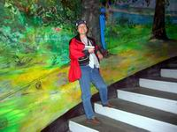 |
| 由奧塞美術館做12號地鐵往蒙馬特 |
由奧塞美術館做12號的地鐵往蒙馬特，來到這藝術家的聖地，當我們要走出地鐵站，此站樓梯旋轉而上，兩邊牆上盡是一些畫家的創作，讓人深深感受到這裡強烈的藝術氣息。
這個位在巴黎北方的一小個山丘，是遊客必到之處，早期很多貧民居住在此，貧寒的畫家也來此聚集，所以這裡的生活環境在以往比起塞納河邊的優雅文化是有點不同，治安也比較亂，但現在可不一樣了，遊客如織熱鬧非凡。
蒙馬特的購物街
先到熱鬧的購物街逛逛，哇！原來這裡是shopping的天堂，成堆便宜的衣服大拍賣，一間間的布店、藝品店，琳瑯滿目的商品，還真可以逛個大半天。難怪有些團員來巴黎的第一站就是逛蒙馬特，還以為是先到此接受藝術的洗禮，對他們還充滿敬意，可能是到此實地觀察，才發覺有人可能是想到此來蝦拼吧！
女領隊季玫事先警告我們，在巴黎可能是被最沒有防備的人所騙，所以我們在巴黎對陌生人是敬而遠之，誰是好人？誰是騙子？真是無法確認，但走了一段路在東轉西逛後已有點不知東西南北，看到一個東方臉孔的女子走來，抱著可能受騙的心，趨前問路，原來她還是來自台灣的同胞，在巴黎居住多年，在她熱心告訴我們走到路口往山坡上看，如有看到旋轉木馬，就由那條街往上走，即可到聖心堂，事後還熱心要帶我們去，看來並不是每個巴黎的人都不可信任哩！
大家嘻哈的邊走邊逛，反正整個下午就要在蒙馬特耗過，經過一間小餐廳門口，看到甬道的壁上有聖心教堂和巴黎鐵塔的壁畫，大家爭相溜上去拍照留念，這就是自助旅遊的樂趣，雖然靠兩腳走比較累，但留下的點點滴滴回憶，確是令人回味無窮。
聖心堂前廣場的人群
| 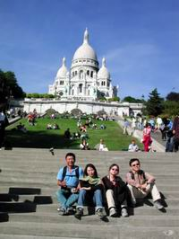 |
| 蒙馬特的聖心堂，白色純潔的教堂，黑色嚴格的管理員，黃色自在的旅人，構成一個彩色的世界！ |
在亮麗的法國陽光照射下，我們拖著疲憊的二腳，一階一階的往聖心教堂爬上去，大家儘量走在樹蔭下，以免曬傷，但卻看到二旁草地臥躺了許多遊客，悠閒地享受巴黎的陽光，真是感受不同，不過沒多久就有警察吹哨子來驅趕那些享受日光的人們，還真有點掃興哩！看到黑皮膚的警察趕遊客，就想到電影獄警追趕犯人的場面，有點荒唐！何不事先立個招牌警告遊客？
聖心教堂前人潮熱絡，轉頭往下看，眺望巴黎的街景，往11點鐘位置望去，找到旅館附近的那二支大煙窗，以此地標，判斷我們落腳的地方，就在遙遠的那一邊。
走進聖心教堂，大家累得坐下小睡一下，教堂內的警察看出我們的詭計，無心做禱告，請我們到外面，以免打擾膜拜的人，真是有點丟臉呢！
廣場上的藝術家
| 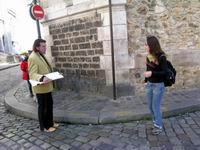 |
| 要前往廣場的路途中，有幾個人拿著畫板在半路攔截要幫人畫畫，令人有點突兀。在半路招攬遊客的這些游離畫家好似跑單幫的，為了討生活還得小心警察的取締。 |
從教堂側邊小路繞個道，就到了聞名的畫家聚會場所─帖特廣場，據說這些畫家有些是一輩子都在這裡做街頭畫家，國內知名畫家席德進當初就是在這裡幫人畫像，畫一張20元，如果畫得好，顧客就多給一些小費，遇到有錢人會一出手就是小費100元，對他來講就這可是幾天的生活費，經過這樣的磨練，造就了他深厚的素描基礎，說來畫畫除了天份，還是要勤練。
要前來廣場的路途中，有幾個人拿著畫板在半路攔截要幫人畫畫，令人有點突兀。要在帖特廣場的畫家都有一定的水準，如果畫不好，生意不上門也是很難看，況且他們還得向政府註冊，拿執照才可以幫人畫，所以在半路招攬遊客的這些游離畫家好似跑單幫的，為了討生活還得小心警察的取締。
約有三十個左右的畫家集中在一個廣場，每個人各有不同的畫風，功力都很好，有油彩、粉彩、水彩，題材除了法國風情的窗景畫、商店街景和一些觀光景點，讓我印象深刻的是以單色粉彩做現場人像素描，畫得真是細膩，看了之後我才知道原來粉彩也可以如此的畫法，站在一旁學得幾招，好回家之後自己磨練看看；還有一個粉彩畫家，將一截截小段粉彩筆，在方角上以指甲刻出幾個缺口，就利用平筆方式在畫面上一掃一轉，一張漂亮的風景畫就完成，熟練的技法看似容易，其實是不簡單的。
一位沒有顧客上門的女畫家，自己對著三隻小猴子玩偶做素描，這可能是這些畫家在生意清淡時，自我磨練打發時間的方式。
紅磨坊的媚力
| 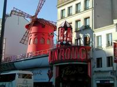 |
| 以紅色磨坊造型的招牌的劇院就在眼前，結果一看價目，真令人瞠目結舌，一張票要歐元92元，折合台幣大概將近4000元。 |
聽說馳名中外的紅磨坊歌舞秀就在蒙馬特，所以男生們眼睛一亮，一致決定一定要去觀光一下，順便「洗洗眼睛」！大家興致勃勃的延著地圖指標在蒙馬特的小巷道裡找尋紅磨坊的蹤跡，有人拿著地圖去一家麵包店問路，結果這店家反應泠漠，似乎沒有善意，也許這種表演在他們法國只是給觀光客娛樂的節目，對他們來說可能不是很喜歡外國人以這種角度來衡量他們的文化水平，所以並不熱絡。
就這樣我們一面找尋紅磨坊，一面觀看小巷內的風光，好不容易走到了大馬路，一看一間以紅色磨坊造型的招牌的劇院就在眼前，我們一群鄉巴佬，想到既然來到巴黎，對巴黎的夜生活也該有個認識，就進入想先買票，結果一看價目，真令人瞠目結舌，一張票要歐元92元，折合台幣大概將近4000元，再進一步的詢問，才知每晚只有兩場，一場晚上九點開始；一場則至深夜十一點才開始，而且今晚的票也已賣光了，哇！這麼貴的票價生意還如此的好，看來我們這次的巴黎行是沒有這個福份看到這有名的紅磨坊秀了。（還是回家看DVD的紅磨坊秀算了！）
巴黎街道上的越南河粉─為平河粉
| 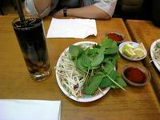 |
| 有河粉的Q；豆芽菜的脆；還有羅勒的清香，真不是蓋的，口味不錯哦！ |
有同團的隊友由網路上得知巴黎有家越南河粉很好吃，昨晚已有人搶先品嚐，我們當然也不落人後，在秀蓉和三秒的領隊下搭上地鐵到19區，到「為平河粉店」吃越南河粉。
這家店面看來普通，法國料理大致說來都不是煮得滾熱，連著幾天下來胃腸已習慣這種溫度的東西，但還是有點懷念熱湯，今晚的越南河粉，想必能讓胃口暖和一下。
點了牛肉河粉和一客清補涼，結果服務生先端來的是一盤新鮮的豆芽、羅勒、洋蔥，我們正在納悶這些菜要如何吃法時，一碗熱騰騰的湯端來，裡面內放著河粉與切成薄片的牛肉，我們將菜全放入滾燙的河粉湯中，吃時可依各人口味沾一點醬料，有河粉的Q；豆芽菜的脆；還有羅勒的清香，真不是蓋的，口味不錯哦！
吃完河粉，再嚐一下清補涼，這種涼品，顧名思義，是有補身的功效，不知是電車內的空氣悶熱，還是補品的效用發作，在吃完之後，大家兩頰泛紅，全身發熱，像極了武俠小說的「逍遙催情散」，幸好大家只是身體發熱，慾望並無提升的跡象，所以一路平淡無事發生。不過說實在的，將仙草與補藥放在一起，也只有這清補涼才做得出來。
夏佑宮的夜景
| 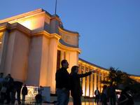 |
| 夏佑宮（夏綠蒂宮），這個有如飛鳥展翅的建築，是拍攝艾菲爾鐵塔最好的地方。夏佑宮西翼有海洋博物館、人類博物館，東翼是法國遺跡博物館，但我們來時已是夜晚，無緣進入參觀，在外面廣場一尊尊金身雕塑，在澄黃燈光的投射下，讓廣場燈火通明。 |
為了能好好的觀賞艾菲爾鐵塔的夜景，我們在二度遊河之前先至與鐵塔隔著塞納河遙遙相望的夏佑宮（有人將它翻成夏綠蒂宮，這二個名字都很美），這個有如飛鳥展翅的建築，是拍攝艾菲爾鐵塔最好的地方。
夏佑宮西翼有海洋博物館、人類博物館，東翼是法國遺跡博物館，但我們來時已是夜晚，無緣進入參觀，在外面廣場一尊尊金身雕塑，在澄黃燈光的投射下，讓廣場燈火通明，遊客也很多，當然也少不了穿梭在遊客之間的無照小販，他們的生存方法是利用一塊大方巾，在四個角綁上麻繩，以大方巾為舖布放在地上叫賣，看到警察來時，只要將麻繩一抓，就可以最快速度與警察玩躲貓貓。
廣場上人影晃動，大家站在靠近塞納河的這一方，由近景的噴泉，和遠方的鐵塔，連成一線，在夜晚的燈光投射下光芒耀眼，有很多人在這裡取景拍照，利用圍牆做腳架，固定相機，照出美麗的夜景，蔚藍的天空，在落日之後呈現深藍，將鐵塔襯托得更耀眼，真是底片的殺手。
二度夜遊賽納河
| 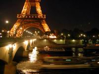 |
| 艾菲爾鐵塔的燈影與賽納河上多采多姿的橋樑互相輝映。 |
昨日的遊河意猶未盡，本來今晚打算看紅磨坊，結果票已售罄，利用這個時間，再度夜遊塞納河，也好陪陪昨日未上船的同伴。
同樣在３號碼頭搭乘Bateaux Parisiens遊輪，今天的感受與昨日有點不同，一群聒噪的美國遊客，不坐下來好好欣賞夜景，精神亢奮的笑鬧，而影響了那浪漫寧靜的氣氛，真是可惜。
迷失在郊外快速火車上
| 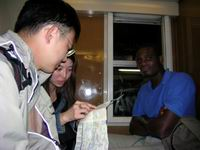 |
| 迷路，是自助旅遊者必修的課程之一，解鈴還需繫鈴人，問當地的人最能找到旅者的方向，這時語言就成為彼此溝通的救命仙丹，如果無法用嘴巴釋出求救訊號，你就得使用「比手畫腳」一幅裝可憐的救命絕活。 |
| 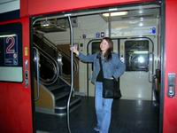 |
| 就是這位好心的大陸姑娘指導我們回家的路，四海之內皆兄弟，這句放諸四海皆準的明言在國外可以通行順暢，反觀在海峽兩岸為何如此窒礙難行？政治家的私心往往使得好朋友礙於情勢只得變成世仇！真是感傷！ |
今晚我們發現由艾菲爾鐵塔可直接搭坐RER郊外快速火車回旅館，希望能早點回去休息。
當車子開到我們要下車的前一站時，突然聽到廣播，這班車到此是最後一站，當我們還在一陣錯愕時，全車已一片漆黑，我們趕緊下車，剛好這時在月台上有一班車要往我們旅館的方向，正要開走，一伙人趕忙衝上去，心想再過幾分鐘就可以平安到站了，這時舜民喃喃自語的說：「該不會過站不停吧！」，果真眼看著車子飛似的過了Liberter站而沒有停下來，這時大家都傻眼了，秀蓉笑說舜民是烏鴉嘴，不知道要被載往那裡，火車快速的飛往郊外，望向窗外燈火逐漸稀少，到後來是烏黑一片，每個人的臉都糾成一團。有人苦中打趣說：「看來待會兒我們走路回到旅館可能都已經天亮了！」一點都不好笑，沒人有心情笑得出來！好冷的笑話！
舜民又負起領隊的精神，到車門邊探問一位法國人，沒想這位仁兄，兩手一攤，表示他也是跟我一樣上了賊船，這位法國人全身酒味，手上還拿著一個艾菲爾鐵塔買的禮物，想必也是與我們搭同一路線，沒想到法國人也會迷路，真讓我們哭笑不得。唉！真是遇人不淑也！
就在這時，眼尖的俊明，早就發現車上有一位中國女孩，這位背對著我們的長髮女孩長得很漂亮，與一位黑人在一起，難怪會引起帥哥的注意，沒想到這種男人之本性，居然在這時發生對人類有益處的功效。在她的指點下，我們才知道這種 RER外速郊外火車有時不是每站都停，在上車之前，要看一下月台上的電腦告牌，才可以確定是否有在我們下車的站停留，她告訴我們最好的方法就是在下一站轉車回里昂車站，再坐地鐵回去，因地鐵最晚可到半夜12:30，阿淵開玩笑的說這麼晚如是沒有車子回去，我們乾脆就去她家過夜算了，嚇得漂亮妹妹連忙說她家還好遠，不過也讓這緊張氣氛輕鬆了不少，在我們要下車時她依依不捨的跟我們再見，並說如果不是太晚了，她就可陪我們回去，哇！真是好心腸。
欲速則不達，回到Liberte地鐵站比起昨日更晚了，但有幾位年輕人的作陪，我們才有機會體驗這種迷失在深夜火車上的難忘經驗，走在深更半夜的街上，只有在轉角處一間即將關門的商店還有燈火，走上塞納河的橋上還好沒有發現男領隊子瑋等候的身影，否則可真不好意思了。
這次的教訓，讓我們學到如何搭乘巴黎RER火車，並讓我們這巴黎浪漫六人組，有種共患難見真情的情誼，默契更加十足。
趕緊休息吧！明天的行程和今天一樣緊湊！